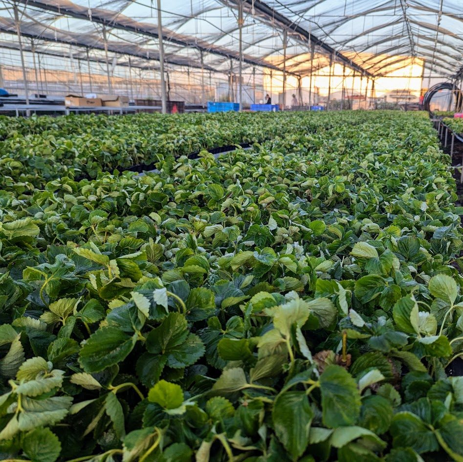
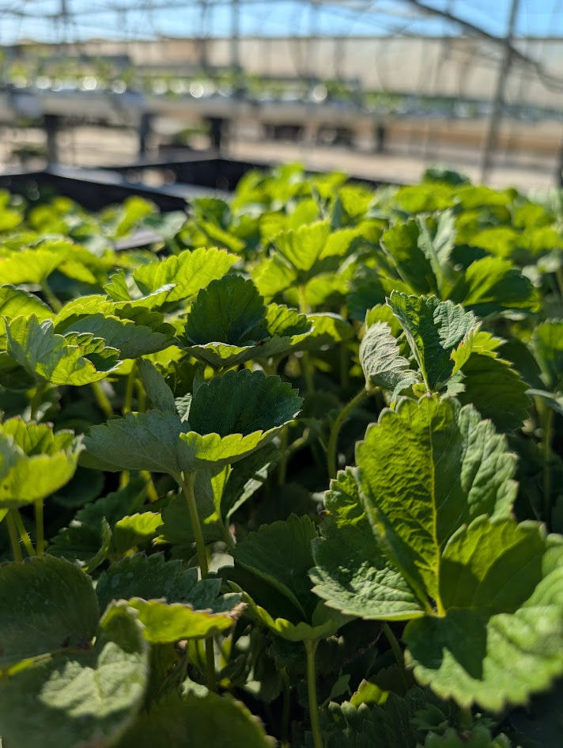
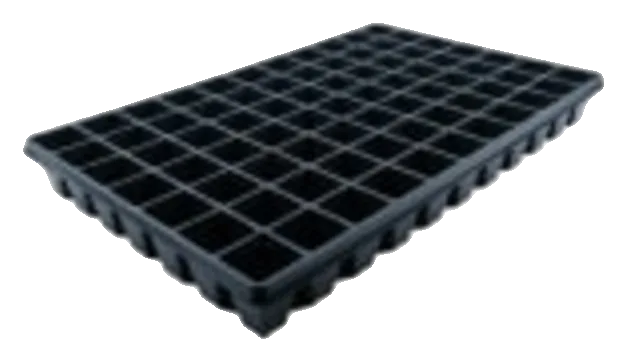

Plants
A strawberry propagation nursery, from the mother plant to a plant ready for the gutter.
The plant's path
Tissue culture
Virus-free material, true to variety.
Nucleus house
Full isolation and climate control.
Foundation house
First multiplication at commercial scale.
Mother plants
Every batch recorded by source and date.
Rooting in trays
20 to 30 days to a finished plant.
Hardening & establishment
Refrigerated transport and support through the first two weeks.

The rooting
tray.
A deep cell with internal ribs that steer the root downward instead of circling.

77 cellsMEX profile